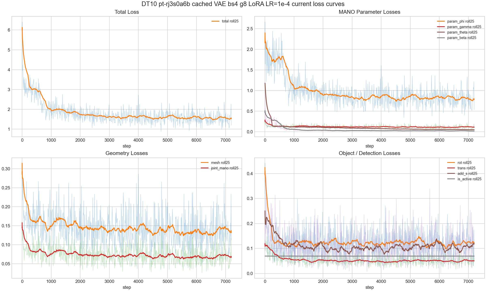
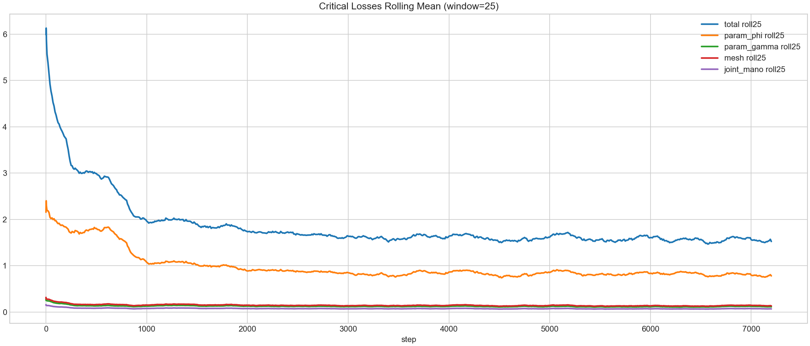

Evaluate DT10 post-phi-geodesic LoRA LR=1e-4 ckpt_step007000 on one DexYCB train sequence and one test sequence while the 10k ACP job continues running.
| Task | Status | Commit | What landed |
|---|---|---|---|
| eval-contract-check | PASS | Matched eval settings to training: cached Wan2.2 VAE, clip_len=81, n_max=2, head_mid_dim=256, LoRA rank/alpha 16/32. | |
| train-one-seq-eval | PASS | Evaluated ckpt_step007000 on train sequence 20200709-subject-01/20200709_141754 across 8 cameras. | |
| test-one-seq-eval | PASS | Evaluated ckpt_step007000 on test sequence 20200928-subject-07/20200928_143249 across 8 cameras. | |
| visualization | PASS | Rendered pred-vs-GT world-space multiframe and rotating videos for the first window of each split. |
Train one-sequence hand joint/mesh L2 is 302.0/296.6 mm; test one-sequence is 322.5/316.9 mm, so ckpt_step007000 is not a quality pass despite useful loss minima.
Object ADD-S is 60.5 mm on the train sequence and 43.5 mm on the test sequence, while hand detection F1 remains below 0.45.
| Aspect | Current state |
|---|---|
| ACP training job | pt-rj3s0a6b remains running; this eval used ckpt_step007000 and did not stop or modify the job. |
| Eval scope | One sequence per split, 8 cameras each; not a full s1 acceptance eval. |
| Visualization | Videos use first eval window per split and anchor predictions to GT frame-0 centroids for visual comparability. |
| Task | Priority | What's needed |
|---|---|---|
| monitor-final-10k | P0 | Monitor pt-rj3s0a6b to completion, then evaluate final and best-loss checkpoints, especially around step 4780/6190 and final. |
| diagnose-train-eval-gap | P0 | Explain why low train loss around step 6190 still yields poor one-sequence hand L2 at ckpt7000. |
| Item | Value |
|---|---|
| Checkpoint | pt-rj3s0a6b ckpt_step007000.pt |
| Training config match | VAE_SOURCE=cache, clip_len=81, n_max=2, head_mid_dim=256, lora_rank=16, lora_alpha=32 |
| Train sequence | 20200709-subject-01/20200709_141754, 8 cameras, 8 eval windows |
| Test sequence | 20200928-subject-07/20200928_143249, 8 cameras, 8 eval windows |
| Important caveat | Metrics are one-sequence probes, not full DexYCB s1 train/test acceptance. |
| Split | Hand joint L2 | Hand mesh L2 | Detection F1 | Side acc | Obj ADD-S | Obj rot | Obj trans |
|---|---|---|---|---|---|---|---|
| train one-seq | 302.0 mm | 296.6 mm | 0.449 | 0.750 | 60.5 mm | 8.7 deg | 60.1 mm |
| test one-seq | 322.5 mm | 316.9 mm | 0.429 | 0.625 | 43.5 mm | 29.3 deg | 37.6 mm |
Raw JSON: train metrics, test metrics, loss summary.
At capture time, the running job had logged through step 7200. Best logged geometry before eval was mesh 0.05205 and joint 0.02626 at step 6190; ckpt7000 eval remains much worse in mm metrics.


Paste this into a new Claude Code session:
Read https://haonanhe.github.io/HOI3R-project-tracking/updates/2026-05-07-session-summary-dt10-ckpt7000-lora1e4-one-seq-eval.json and continue from tasks_pending[0] (monitor-final-10k [P0]: Monitor pt-rj3s0a6b to completion, then evaluate final and best-loss checkpoints, especially around step 4780/6190 and final.). Context: branch feat/dcf@01cc7c3d048435724d23529bbde1ded49b65b706; worktree /mnt/afs/haonan/hoi3r/HOI3R/.worktrees/feat-dcf.